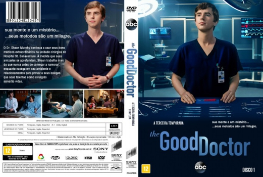

The Good Doctor: O Bom Doutor [Autorado] - Temporada 03 (2017)

![link to The Good Doctor: O Bom Doutor [Autorado] - Temporada 03 on Rotten Tomatoes](../img/tomatoes.png)
![link to The Good Doctor: O Bom Doutor [Autorado] - Temporada 03 on IMDb](../img/imdb.png)

Avaliação (IMDb):


8.2/10 (57K votos)
Avaliação (Usuário):
Outro Título:The Good Doctor
País:United States, 15 hours
Idiomas falados:Inglês, Português
Gênero(s):Drama,
Diretor(s):Mike Listo, Steven DePaul, Michael Patrick Jann, Allison Liddi-Brown, Nestor Carbonell
Codec:MPEG-2 (DVD)
Número: 4828
Sinopse:
Um jovem médico com autismo começa a trabalhar em um prestigiado hospital. Além dos desafios da profissão, ele terá também que provar sua capacidade a seus colegas e superiores.
Elenco:
Freddie Highmore, Antonia Thomas, Hill Harper, Richard Schiff, Nicholas Gonzalez, Christina Chang, Paige Spara, Fiona Gubelmann, Will Yun Lee, Tamlyn Tomita
Tipo de mídia: DVD5,
Legendas: Português,
Alugado: Não
Tela: 2.55:1